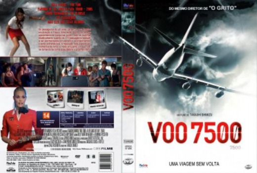

Voo 7500 (2014)


At 30,000 feet. There's Nowhere to Run.

Avaliação (TMDb):


4.6/10 (396 votos)
Avaliação (Usuário):
Outro Título:7500 (Título Original)
País:United States, 79 minutos
Idiomas falados:Inglês, Português
Gênero(s):Suspense, Terror, Mistério
Diretor(s):Takashi Shimizu
Codec:MPEG-2 (DVD)
Número: 2083
Sinopse:
O Voo 7500 Parte De Los Angeles Com Destino À Tóquio. Enquanto O Voo De 10 Horas Sobre Voa O Oceano Pacífico No Período Noturno, Os Passageiros Começam A Notar O Que Parece Ser Uma Força Sobrenatural Na Cabine.
Elenco:
Ryan Kwanten, Amy Smart, Leslie Bibb, Jamie Chung, Scout Taylor-Compton, Nicky Whelan, Jerry Ferrara, Christian Serratos, Alex Frost, Rick Kelly
Tipo de mídia: DVD5,
Legendas: Português
Alugado: Não
Tela: 1.85:1